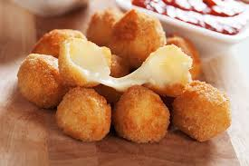

Bolinha de Queijo

Descrição:
Bolinha de queijo para comer com os amigos em festas!!
Ingredientes!!
- 1 xícara (chá) de leite.
- 1 colher (sopa) de margarina.
- 1 pitada de sal.
- óleo para fritar.
- 1 xícara (chá) de farinha de trigo.
- 1 gema.
- queijo branco ou mussarela a gosto.
Instruções!!
- Em uma panela, adicione o leite, a farinha de trigo, a margarina, a gema e o sal.
- Leve ao fogo e mexa com um garfo até que a massa solte da panela, depois deixe esfriar.
- Modele a massa em bolinhas e recheie com o queijo, depois passe o bolinho na gema de ovo e na farinha de rosca.
- Em uma panela, adicione o óleo, depois de quente adicione as bolinhas e frite-as.